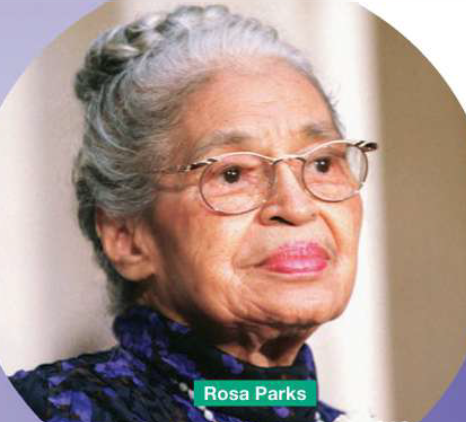

A quiz about you, a look at two real people, personality adjectives, an article about introverts, and the article system (a / an / the / no article). Type your name above, then work through the pages.
1. Are you an introvert? Quiz · 2. Listening: Kate & Alex · 3. Vocabulary: personality adjectives · 4. Reading: "Why the world needs introverts" · 5–7. Grammar: articles (a/an/the/0) · 8. Speaking & writing · 9. Submit
SB p.47, ex. 1a
1. Do you prefer spending time alone or with other people?
2. Do you think you are an extrovert (confident and sociable) or an introvert (quiet and happy to be alone)?
SB p.47, ex. 1b. Read each statement and click Yes or No.
Compare with your partner — do you agree with each other's results? (SB p.128 has the full quiz key, if your teacher has a copy to hand.)
SB p.47, ex. 2a. Listen to track 04.05.
Do you think you can tell whether a person is an extrovert or an introvert from their appearance? Think about: body language, clothes, hairstyle, make-up.
Look at Kate and Alex. Which person seems outgoing and sociable, and which seems serious and reserved? Why?
SB p.47, ex. 2b. Listen and decide — on the 1–10 extrovert→introvert scale on p.128.
Kate is a...
Alex is a...
Click a chip to cycle: grey → Kate (purple) → Alex (yellow) → grey.
⬤ purple = Kate ⬤ yellow = Alex
SB p.47, ex. 2c. Listen again and make notes on each topic.
Kate: parties · being alone · other people's opinions of her · speaking in public
Alex: parties · being alone · making people laugh · chatting with people
SB p.48, ex. 3a. Click a word, then click its definition.
SB p.48, ex. 3c. Type one adjective from the box. Some sentences have more than one correct answer.
1. Lisa loves romantic poetry. It often makes her cry.
2. Louis doesn't say much when he's with people he doesn't know.
3. Stefan always has something to say.
4. Jon loves parties and meeting new people.
5. Anna doesn't talk to many people, but you can have an interesting discussion with her.
Ex. 3d — which adjectives in the list above best describe you? Explain your choices.
SB p.48

It's good to be sociable! It's good to be confident! It's good to be loud! In her book Quiet, Susan Cain points out how deeply this belief is held by society.
Very often the qualities of extroverts — being active and lively, making quick decisions and working well in a team or group, for example — are valued more than the shy, serious and sensitive qualities of introverts.
Susan Cain calls this attitude the 'Extrovert Ideal'. In her book, she looks at the way society places such value on the Extrovert Ideal that many modern schools and workplaces are built around it. Desks in classrooms are pushed together so students can work in groups more easily. In Europe and the USA, employees are frequently put in shared offices so they can work in teams. Students and employees are also expected to be confident and talkative.
Why are the needs of introverts ignored in this way when introverts have so much to offer? Introverts need less excitement around them than extroverts, it's true, but that doesn't make them less exciting people. Many of the world's greatest ideas, art and inventions have been produced by introverts. The Indian leader Mahatma Gandhi was an introvert, as were the artist Vincent van Gogh and the physicist Albert Einstein.
Then there was Rosa Parks, who helped start the US civil rights movement in 1955 by bravely and quietly saying no when a white passenger wanted to sit in her seat on a bus. Famous introverts in modern times include Angelina Jolie and Lorde. Jolie, a hugely successful actor, supports charities that help people in war zones. She describes herself as an introvert, saying she loves to spend time alone or with small groups of people because it helps her develop as a person.
And despite seeming incredibly comfortable on stage, pop singer Lorde also sees herself as an introvert and says she is 'really a shy, library person'.
But let's not forget that we need extroverts, too — because introverts can come up with great ideas but they may need help in communicating those ideas to the world. Songwriters need singers. Designers need salespeople. In other words, extroverts and introverts need each other.
Write your answer, then compare it with a model answer. Not auto-scored — your teacher will check these with you.
1. What is the attitude that Susan Cain calls the 'Extrovert Ideal'?
2. How do people organise classrooms and offices to make them better for extroverts?
3. How are extroverts useful to introverts?
SB p.49, ex. 5a. Choose a / an / the / – (no article) for each gap.
I have always been introvert. At school, I was really shy, and I have always preferred to spend hours alone with good book or to go for a long walk. I hate clubs and groups. For example, I went to birthday party last week and I felt really nervous. But I tried to look happy at party because I didn't want people to think I was strange.
My husband is totally different. He's friendliest person in world. He loves going out and being with people. Every so often he says to me, 'You really don't like people, do you?'
Which adjectives best describe each person? Click a chip to cycle: grey → Laura (purple) → husband (yellow) → grey.
⬤ purple = Laura ⬤ yellow = her husband
SB p.49, ex. 5b. For each example, choose the rule that explains the article used. (More than one may be accepted.)
1. "...been an introvert"
2. "At school"
3. "...with a good book"
4. "I hate clubs and groups"
5. "...to a birthday party"
6. "...at the party"
7. "...the friendliest person"
8. "...in the world"
9. "...don't like people"
➤ Now go to Grammar Focus 4B on SB p.150 (next page).
SB p.150 — the rules, for reference
SB p.151, ex. a. Each sentence below has a mistake with the missing/underlined word. Choose the correct option.
1. Do you want to go to the cinema with me?
(fixed for you as an example)2. I read very interesting book last weekend.
3. I want to buy new shirt.
4. We had good time at the beach.
5. They recently moved to countryside.
6. I like learning languages.
7. If you have problem, call me.
8. Good night! I'm going to bed.
9. My brother is engineer.
10. If you go to the shops, can you get me bread?
SB p.151, ex. b. Complete the text with a / an / the / – (no article).
I don't like working in groups because I never know what to say when people talk to me. last year, I joined language class and teacher made students work in groups for most activities. lessons that we had were good, but I wasn't happy about speaking activities. I know practising speaking is probably best way to learn language, but I don't really need to speak in my job. only thing I want is to be able to write good emails without making mistakes. One day, after extremely difficult lesson, I decided to speak to teacher about problem. I explained situation and she listened carefully. She explained purpose of working in groups and said that she needs to find right balance for all of students in class. In end, I agreed to try to speak more, and she agreed to give me more time to work quietly.
➤ Now go back to SB p.49.
SB p.49, ex. 5d. Write a short paragraph (60–90 words) about ONE of these topics. Try to use a/an/the/no article correctly.
SB p.49, ex. 6a. Choose one topic below. Make brief notes about the person, using adjectives from earlier in the lesson.
Check your name is entered at the top, then submit. Your score covers the auto-checked exercises only — your teacher will review the writing and speaking tasks separately.